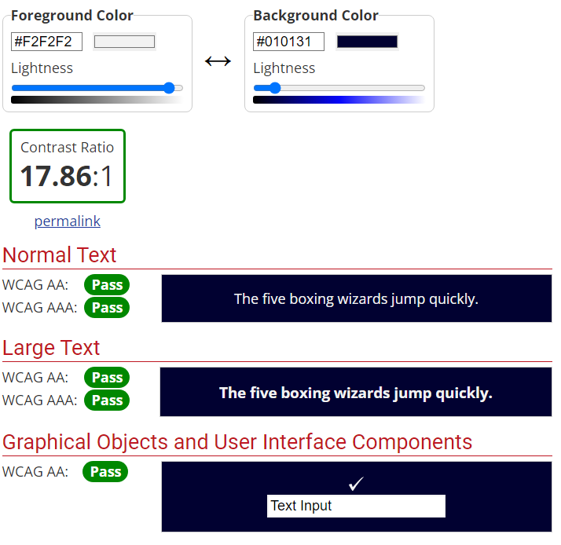
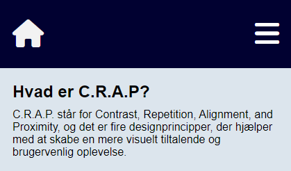
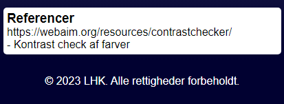
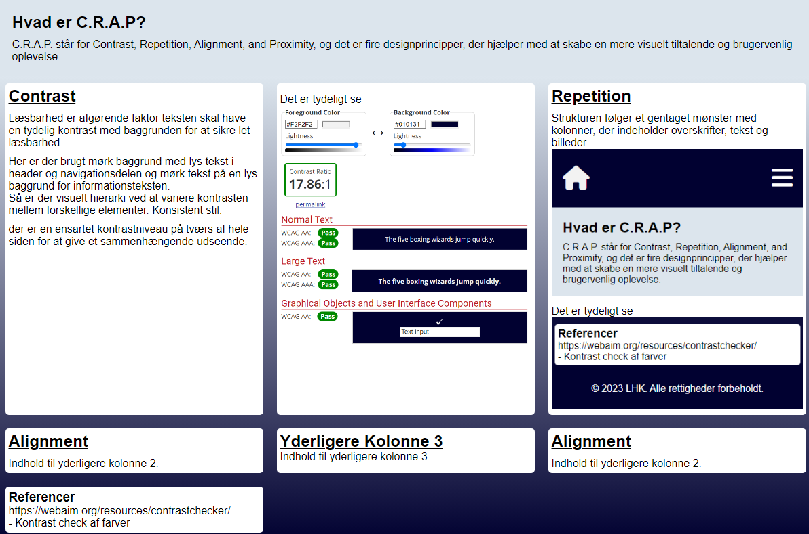

Hvad er RWD
C.R.A.P. står for Contrast, Repetition, Alignment, and Proximity, og det er fire designprincipper, der hjælper med at skabe en mere visuelt tiltalende og brugervenlig oplevelse.
Contrast
Læsbarhed er afgørende faktor teksten skal have en tydelig kontrast med baggrunden for at sikre let læsbarhed. Her er der brugt mørk baggrund med lys tekst i header og navigationsdelen og mørk tekst på en lys baggrund for informationsteksten. Så er der visuelt hierarki ved at variere kontrasten mellem forskellige elementer. Konsistent stil: der er en ensartet kontrastniveau på tværs af hele siden for at give et sammenhængende udseende.
Det er tydeligt se
Repetition
Strukturen følger et gentaget mønster med kolonner, der indeholder overskrifter, tekst og billeder.
Det er tydeligt se
Alignment
Indhold til yderligere kolonne 2.
Indhold til yderligere kolonne.
Proximity
Elementerne inden for hver kolonne er grupperet tæt sammen, hvilket indikerer deres sammenhørighed. Organiseret din kode i sektioner (header, main, footer) for at opnå en klar nærhed mellem relaterede dele af siden. (evt kode tekst)
Referencer
- https://webaim.org/resources/contrastchecker/
- - Kontrast check af farver